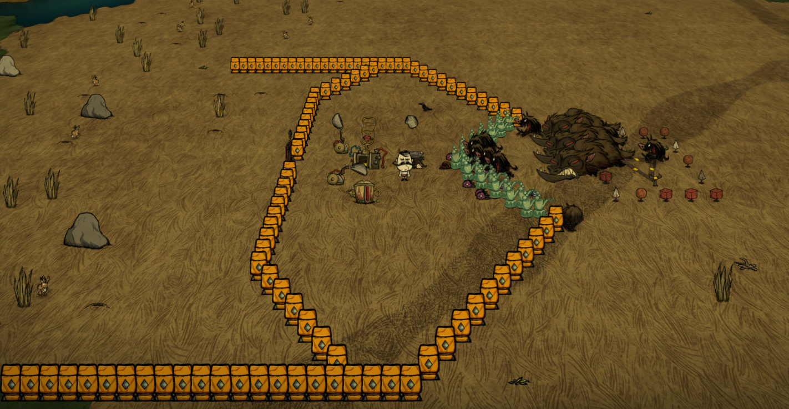
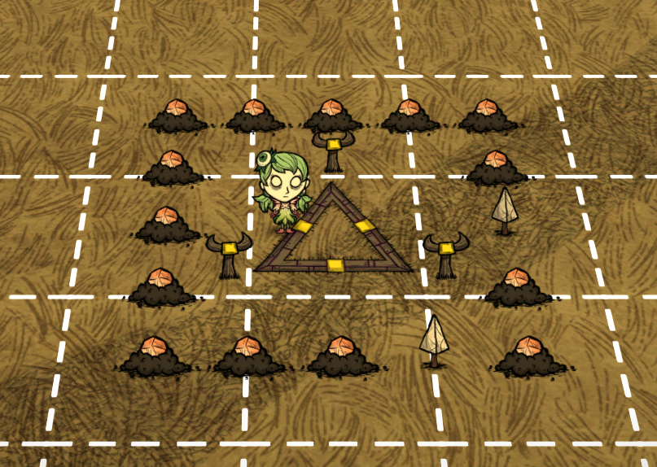
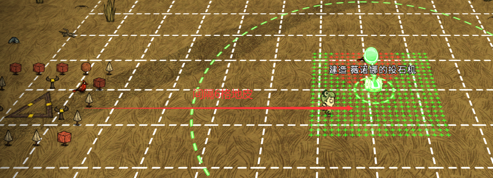
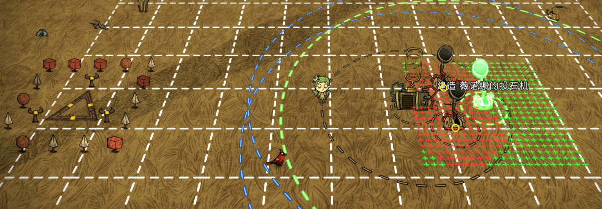
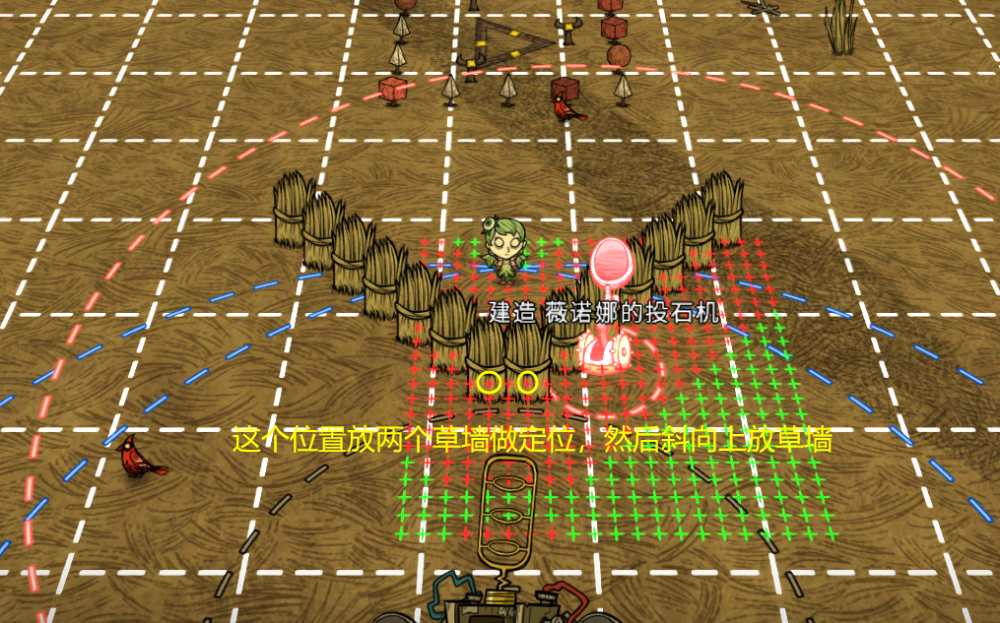
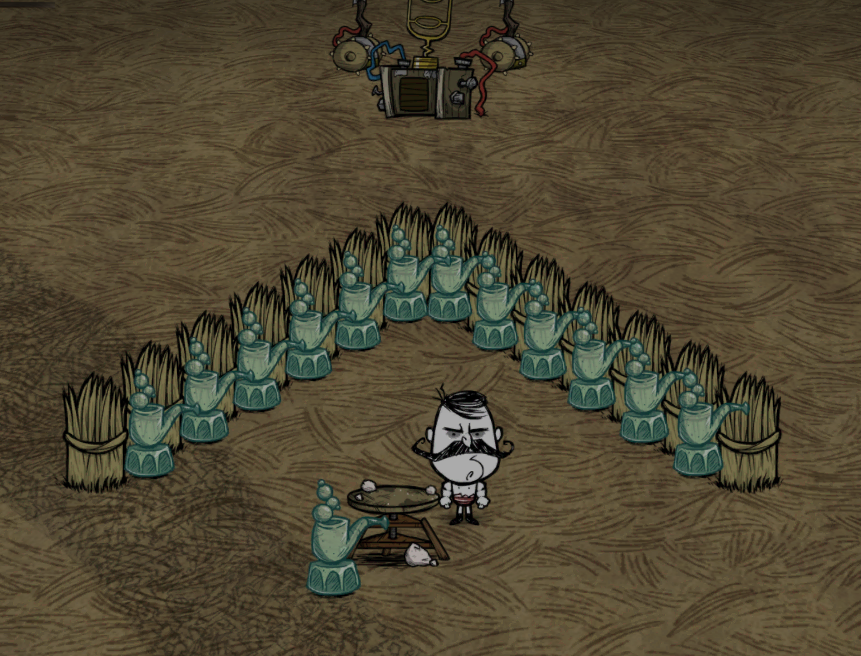
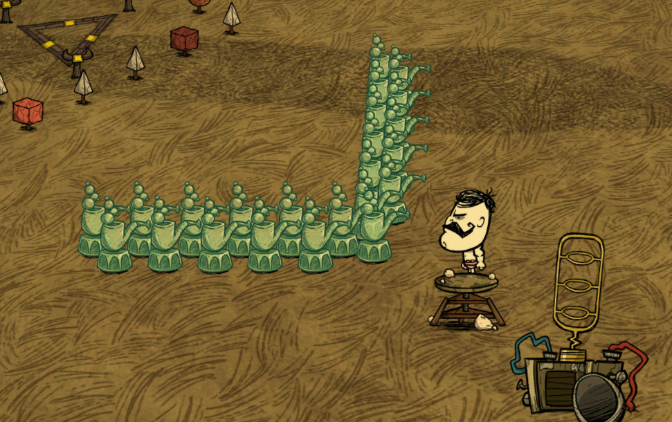
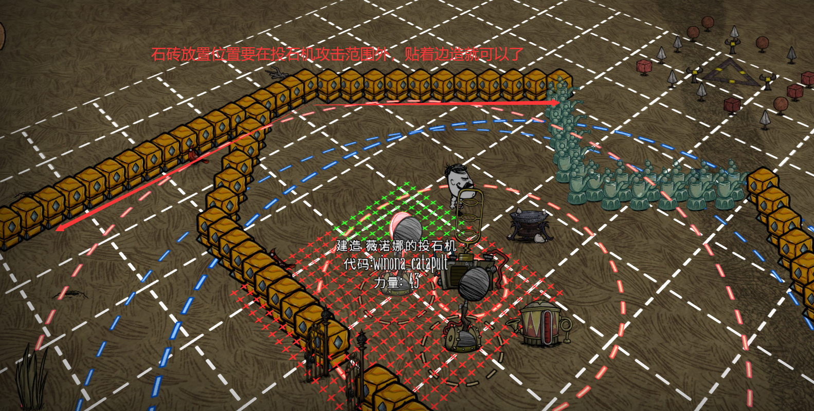
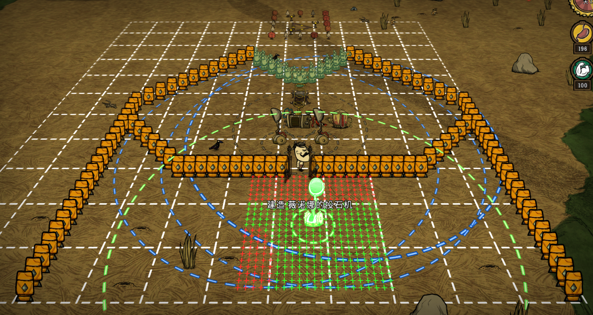

内容来自B站UP主 灭吟弄月 的视频教程


放两个投石机和一个宝石发电机


放草墙是为了后面雕像好定位

在草墙夹缝中间放上雕像，能放的比较整齐
然后将草墙敲掉，在另一侧两个雕像中间夹缝处也放上雕像，这样狗就不会挤进来了


为了防止投石机打到墙，所以墙要贴着投石机攻击范围的边缘来造
石墙放好后，将狗王传过来，插上宝石，就可以开刷了


一位玩家用恶魔人，一位玩家用植物人，恶魔人离的稍微远点，吸不到灵魂的位置即可，恶魔人站的近点，能靠灵魂回血即可，这样就能边刷宝石，边刷活木了